Hydrocarbons
The term ‘hydrocarbon’ is self-explanatory which means
compounds of carbon and hydrogen only. Hydrocarbons
play a key role in our daily life. You must be familiar with
the terms ‘LPG’ and ‘CNG’ used as fuels. LPG is the
abbreviated form of liquified petroleum gas whereas CNG
stands for compressed natural gas. Another term ‘LNG’
(liquified natural gas) is also in news these days. This is
also a fuel and is obtained by liquifaction of natural gas.
Petrol, diesel and kerosene oil are obtained by the fractional
distillation of petroleum found under the earth’s crust.
Coal gas is obtained by the destructive distillation of coal.
Natural gas is found in upper strata during drilling of oil
wells. The gas after compression is known as compressed
natural gas. LPG is used as a domestic fuel with the least
pollution. Kerosene oil is also used as a domestic fuel but
it causes some pollution. Automobiles need fuels like petrol,
diesel and CNG. Petrol and CNG operated automobiles
cause less pollution. All these fuels contain mixture of
hydrocarbons, which are sources of energy. Hydrocarbons
are also used for the manufacture of polymers like
polythene, polypropene, polystyrene etc. Higher
hydrocarbons are used as solvents for paints. They are also
used as the starting materials for manufacture of many
dyes and drugs. Thus, you can well understand the
importance of hydrocarbons in your daily life. In this unit,
you will learn more about hydrocarbons.
CLASSIFICATION
Hydrocarbons are of different types. Depending upon the
types of carbon-carbon bonds present, they can be
classified into three main categories – (i) saturated
(ii) unsaturated and (iii) aromatic
hydrocarbons. Saturated hydrocarbons
contain carbon-carbon and carbon-hydrogen
single bonds. If different carbon atoms are
joined together to form open chain of carbon
atoms with single bonds, they are termed as
alkanes.On the other hand, if carbon atoms
form a closed chain or a ring, they are termed
as cycloalkanes. Unsaturated hydrocarbons
contain carbon-carbon multiple bonds –
double bonds, triple bonds or both. Aromatic
hydrocarbons are a special type of cyclic
compounds. You can construct a large number
of models of such molecules of both types
(open chain and close chain) keeping in mind
that carbon is tetravalent and hydrogen is
monovalent. For making models of alkanes,
you can use toothpicks for bonds and
plasticine balls for atoms. For alkenes, alkynes
and aromatic hydrocarbons, spring models can
be constructed.
ALKANES
As already mentioned, alkanes are saturated
open chain hydrocarbons containing
carbon - carbon single bonds. Methane (CH4)
is the first member of this family. Methane is a
gas found in coal mines and marshy places. If
you replace one hydrogen atom of methane by
carbon and join the required number of
hydrogens to satisfy the tetravalence of the
other carbon atom, what do you get? You get
C2H6. This hydrocarbon with molecular
formula C2H6 is known as ethane. Thus you
can consider C2H6 as derived from CH4 by
replacing one hydrogen atom by -CH3 group.
Go on constructing alkanes by doing this
theoretical exercise i.e., replacing hydrogen
atom by –CH3 group. The next molecules will
be C3H8, C4H10 …
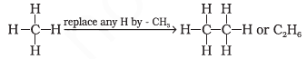
These hydrocarbons are inert under
normal conditions as they do not react with
acids, bases and other reagents. Hence, they
were earlier known as paraffins (latin : parum,
little; affinis, affinity). Can you think of the
general formula for alkane family or
homologous series? If we examine the
formula of different alkanes we find that the
general formula for alkanes is CnH2n+2. It
represents any particular homologue when n
is given appropriate value. Can you recall the
structure of methane? According to VSEPR
theory , methane has a tetrahedral
structure , in which carbon atom lies
at the centre and the four hydrogen atoms lie
at the four corners of a regular tetrahedron.
All H-C-H bond angles are of 109.5°.
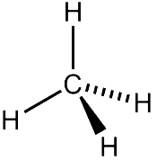
In alkanes, tetrahedra are joined together
in which C-C and C-H bond lengths are
154 pm and 112 pm respectively . You
have already read that C–C and C–H σ bonds
are formed by head-on overlapping of sp3
hybrid orbitals of carbon and 1s orbitals of
hydrogen atoms.
Nomenclature and Isomerism
Nomenclature and isomerism in
alkanes can further be understood with the
help of a few more examples. Common names
are given in parenthesis. First three alkanes
– methane, ethane and propane have only
one structure but higher alkanes can have
more than one structure. Let us write
structures for C4H10. Four carbon atoms of
C4H10 can be joined either in a continuous
chain or with a branched chain in the
following two ways :
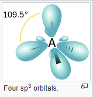
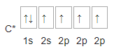
In how many ways, you can join five
carbon atoms and twelve hydrogen atoms of
C5H12? They can be arranged in three ways as
shown in structures III–V


Structures I and II possess same
molecular formula but differ in their boiling
points and other properties. Similarly
structures III, IV and V possess the same
molecular formula but have different
properties. Structures I and II are isomers of
butane, whereas structures III, IV and V are
isomers of pentane. Since difference in
properties is due to difference in their
structures, they are known as structural
isomers. It is also clear that structures I and
III have continuous chain of carbon atoms but
structures II, IV and V have a branched chain.
Such structural isomers which differ in chain
of carbon atoms are known as chain isomers.
Thus, you have seen that C4H10 and C5H12
have two and three chain isomers respectively.
Based upon the number of carbon atoms
attached to a carbon atom, the carbon atom is
termed as primary (1°), secondary (2°), tertiary
(3°) or quaternary (4°). Carbon atom attached
to no other carbon atom as in methane or to
only one carbon atom as in ethane is called
primary carbon atom. Terminal carbon atoms
are always primary. Carbon atom attached to
two carbon atoms is known as secondary.
Tertiary carbon is attached to three carbon
atoms and neo or quaternary carbon is
attached to four carbon atoms.
In structures II, IV and V, you observed
that –CH3
group is attached to carbon atom
numbered as 2. You will come across groups
like –CH3
, –C2H5
, –C3H7
etc. attached to carbon
atoms in alkanes or other classes of
compounds. These groups or substituents are
known as alkyl groups as they are derived from
alkanes by removal of one hydrogen atom.
General formula for alkyl groups is CnH2n+1
Preparation
Petroleum and natural gas are the main
sources of alkanes. However, alkanes can be
prepared by following methods :
1. From unsaturated hydrocarbons
Dihydrogen gas adds to alkenes and alkynes
in the presence of finely divided catalysts like
platinum, palladium or nickel to form alkanes.
This process is called hydrogenation. These
metals adsorb dihydrogen gas on their surfaces
and activate the hydrogen – hydrogen bond.
Platinum and palladium catalyse the reaction
at room temperature but relatively higher
temperature and pressure are required with
nickel catalysts.
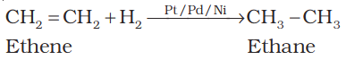

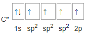
2. From alkyl halides:
i) Alkyl halides (except fluorides) on
reduction with zinc and dilute hydrochloric
acid give alkanes.
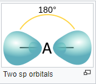
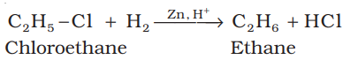
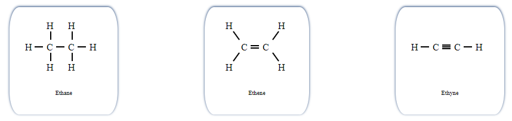
ii) Alkyl halides on treatment with sodium
metal in dry ethereal (free from moisture)
solution give higher alkanes. This reaction
is known as Wurtz reaction and is used
for the preparation of higher alkanes
containing even number of carbon
atoms.
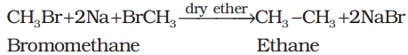

3. From carboxylic acids:
i) Sodium salts of carboxylic acids on heating
with soda lime (mixture of sodium
hydroxide and calcium oxide) give alkanes
containing one carbon atom less than the
carboxylic acid. This process of elimination
of carbon dioxide from a carboxylic acid is
known as decarboxylation.
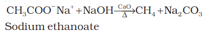
ii) Kolbe’s electrolytic method:
An aqueous
solution of sodium or potassium salt of a
carboxylic acid on electrolysis gives alkane
containing even number of carbon atoms
at the anode.
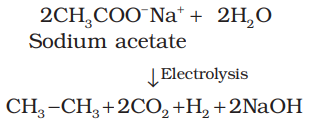
The reaction is supposed to follow the
following path :

Properties
Physical properties:
Alkanes are almost non-polar molecules
because of the covalent nature of C-C and C-H
bonds and due to very little difference of
electronegativity between carbon and
hydrogen atoms. They possess weak van der
Waals forces. Due to the weak forces, the first
four members, C1 to C4
are gases, C5
to C17 are
liquids and those containing 18 carbon atoms
or more are solids at 298 K. They are colourless
and odourless. Petrol is a mixture of
hydrocarbons and is used as a fuel for
automobiles. Petrol and lower fractions of
petroleum are also used for dry cleaning of
clothes to remove grease stains. It is generally observed that in
relation to solubility of substances in solvents,
polar substances are soluble in polar solvents,
whereas the non-polar ones in non-polar
solvents i.e., like dissolves like.
Boiling point (b.p.) of different alkanes are
given in Table 13.2 from which it is clear that
there is a steady increase in boiling point with
increase in molecular mass. This is due to the
fact that the intermolecular van der Waals
forces increase with increase of the molecular
size or the surface area of the molecule.
I we look at the boiling points of
three isomeric pentanes viz., (pentane,
2-methylbutane and 2,2-dimethylpropane). It
is observed that pentane having a
continuous chain of five carbon atoms has the
highest boiling point (309.1K) whereas
2,2 – dimethylpropane boils at 282.5K. With
increase in number of branched chains, the
molecule attains the shape of a sphere. This
results in smaller area of contact and therefore
weak intermolecular forces between spherical
molecules, which are overcome at relatively
lower temperatures.
Chemical properties
As already mentioned, alkanes are generally
inert towards acids, bases, oxidising and
reducing agents. However, they undergo the
following reactions under certain
conditions.
1. Substitution reactions:
One or more hydrogen atoms of alkanes can
be replaced by halogens, nitro group and
sulphonic acid group. Halogenation takes
place either at higher temperature
(573-773 K) or in the presence of diffused
sunlight or ultraviolet light. Lower alkanes do
not undergo nitration and sulphonation
reactions. These reactions in which hydrogen
atoms of alkanes are substituted are known
as substitution reactions. As an example,
chlorination of methane is given below.
Halogenation:

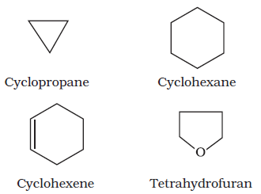

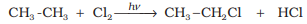
It is found that the rate of reaction of alkanes
with halogens is F2 > Cl2 > Br2 > I2. Rate of
replacement of hydrogens of alkanes is :
3° > 2° > 1°. Fluorination is too violent to be
controlled. Iodination is very slow and a
reversible reaction. It can be carried out in the
presence of oxidizing agents like HIO3 or HNO3.

Halogenation is supposed to proceed via
free radical chain mechanism involving three
steps namely initiation, propagation and
termination as given below:
Mechanism:
(i) Initiation : The reaction is initiated by
homolysis of chlorine molecule in the presence
of light or heat. The Cl–Cl bond is weaker than
the C–C and C–H bond and hence, is easiest to
break.
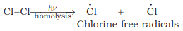
(ii) Propagation : Chlorine free radical attacks
the methane molecule and takes the reaction
in the forward direction by breaking the C-H
bond to generate methyl free radical with the
formation of H-Cl.
The methyl radical thus obtained attacks
the second molecule of chlorine to form
CH3 – Cl with the liberation of another chlorine
free radical by homolysis of chlorine molecule.

The chlorine and methyl free radicals
generated above repeat steps (a) and (b)
respectively and thereby setup a chain of
reactions. The propagation steps (a) and (b) are
those which directly give principal products,
but many other propagation steps are possible
and may occur. Two such steps given below
explain how more highly haloginated products
are formed.
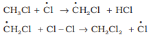
(iii) Termination: The reaction stops after
some time due to consumption of reactants
and / or due to the following side reactions :
The possible chain terminating steps are :
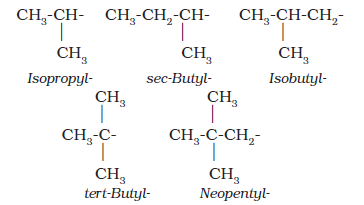
Though in (c), CH3 – Cl, the one of the
products is formed but free radicals are
consumed and the chain is terminated. The
above mechanism helps us to understand the
reason for the formation of ethane as a
byproduct during chlorination of methane.
2. Combustion:
Alkanes on heating in the presence of air or
dioxygen are completely oxidized to carbon
dioxide and water with the evolution of large
amount of heat.
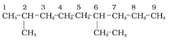
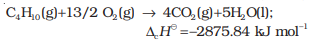
The general combustion equation for any alkane is :

Due to the evolution of large amount of
heat during combustion, alkanes are used
as fuels.
During incomplete combustion of
alkanes with insufficient amount of air or
dioxygen, carbon black is formed which is
used in the manufacture of ink, printer ink,
black pigments and as filters.

3. Controlled oxidation:
Alkanes on heating with a regulated supply of
dioxygen or air at high pressure and in the
presence of suitable catalysts give a variety of
oxidation products.


(iv) Ordinarily alkanes resist oxidation but
alkanes having tertiary H atom can be
oxidized to corresponding alcohols by
potassium permanganate.

4. Isomerisation:
n-Alkanes on heating in the presence of
anhydrous aluminium chloride and hydrogen
chloride gas isomerise to branched chain
alkanes. Major products are given below. Some
minor products are also possible which you
can think over. Minor products are generally
not reported in organic reactions.

5. Aromatization:
n-Alkanes having six or more carbon atoms
on heating to 773K at 10-20 atmospheric
pressure in the presence of oxides of
vanadium, molybdenum or chromium
supported over alumina get dehydrogenated
and cyclised to benzene and its homologues.
This reaction is known as aromatization or
reforming.
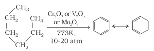
6. Reaction with steam:
Methane reacts with steam at 1273 K in the
presence of nickel catalyst to form carbon
monoxide and dihydrogen. This method is
used for industrial preparation of dihydrogen
gas.
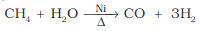
7. Pyrolysis:
Higher alkanes on heating to higher
temperature decompose into lower alkanes,
alkenes etc. Such a decomposition reaction
into smaller fragments by the application of
heat is called pyrolysis or cracking.

Pyrolysis of alkanes is believed to be a
free radical reaction. Preparation of oil gas or
petrol gas from kerosene oil or petrol involves
the principle of pyrolysis. For example,
dodecane, a constituent of kerosene oil on
heating to 973K in the presence of platinum,
palladium or nickel gives a mixture of heptane
and pentene.
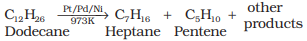
Conformations:
Alkanes contain carbon-carbon sigma (σ)
bonds. Electron distribution of the sigma
molecular orbital is symmetrical around the
internuclear axis of the C–C bond which is
not disturbed due to rotation about its axis.
This permits free rotation about C–C single
bond. This rotation results into different
spatial arrangements of atoms in space which
can change into one another. Such spatial
arrangements of atoms which can be
converted into one another by rotation around
a C-C single bond are called conformations
or conformers or rotamers. Alkanes can thus
have infinite number of conformations by
rotation around C-C single bonds. However,
it may be remembered that rotation around
a C-C single bond is not completely free. It is
hindered by a small energy barrier of
1-20 kJ mol–1 due to weak repulsive
interaction between the adjacent bonds. Such
a type of repulsive interaction is called
torsional strain.
Conformations of ethane : Ethane
molecule (C2H6) contains a carbon – carbon
single bond with each carbon atom attached
to three hydrogen atoms. Considering the
ball and stick model of ethane, keep one
carbon atom stationary and rotate the other
carbon atom around the C-C axis. This
rotation results into infinite number of spatial
arrangements of hydrogen atoms attached to
one carbon atom with respect to the hydrogen
atoms attached to the other carbon atom.
These are called conformational isomers
(conformers). Thus there are infinite number
of conformations of ethane. However, there are
two extreme cases. One such conformation in
which hydrogen atoms attached to two
carbons are as closed together as possible is
called eclipsed conformation and the other
in which hydrogens are as far apart as
possible is known as the staggered
conformation. Any other intermediate
conformation is called a skew conformation.It
may be remembered that in all the
conformations, the bond angles and the bond
lengths remain the same. Eclipsed and the
staggered conformations can be represented
by Sawhorse and Newman projections.
1. Sawhorse projections:
In this projection, the molecule is viewed along
the molecular axis. It is then projected on paper
by drawing the central C–C bond as a
somewhat longer straight line. Upper end of
the line is slightly tilted towards right or left
hand side. The front carbon is shown at the
lower end of the line, whereas the rear carbon
is shown at the upper end. Each carbon has
three lines attached to it corresponding to three
hydrogen atoms. The lines are inclined at an
angle of 120° to each other. Sawhorse projections
of eclipsed and staggered conformations of
ethane are depicted in the following figure.

2. Newman projections:
In this projection, the molecule is viewed at the
C–C bond head on. The carbon atom nearer to
the eye is represented by a point. Three
hydrogen atoms attached to the front carbon
atom are shown by three lines drawn at an
angle of 120° to each other. The rear carbon
atom (the carbon atom away from the eye) is
represented by a circle and the three hydrogen
atoms are shown attached to it by the shorter
lines drawn at an angle of 120° to each other.
The Newman’s projections are depicted in
the following figure.
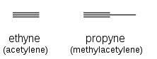
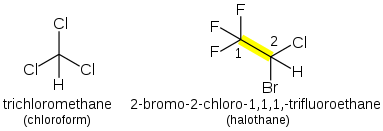
Relative stability of conformations: As
mentioned earlier, in staggered form of ethane,
the electron clouds of carbon-hydrogen bonds
are as far apart as possible. Thus, there are
minimum repulsive forces, minimum energy
and maximum stability of the molecule. On the
other hand, when the staggered form changes
into the eclipsed form, the electron clouds of
the carbon – hydrogen bonds come closer to
each other resulting in increase in electron
cloud repulsions. To check the increased
repulsive forces, molecule will have to possess
more energy and thus has lesser stability. As
already mentioned, the repulsive interaction
between the electron clouds, which affects
stability of a conformation, is called torsional
strain. Magnitude of torsional strain depends
upon the angle of rotation about C–C bond.
This angle is also called dihedral angle or
torsional angle. Of all the conformations of
ethane, the staggered form has the least
torsional strain and the eclipsed form, the
maximum torsional strain. Therefore,
staggered conformation is more stable than the
eclipsed conformation. Hence, molecule largely
remains in staggered conformation or we can
say that it is preferred conformation. Thus it
may be inferred that rotation around C–C bond
in ethane is not completely free. The energy
difference between the two extreme forms is of
the order of 12.5 kJ mol–1, which is very small.
Even at ordinary temperatures, the ethane
molecule gains thermal or kinetic energy
sufficient enough to overcome this energy
barrier of 12.5 kJ mol–1 through intermolecular
collisions. Thus, it can be said that rotation
about carbon-carbon single bond in ethane is
almost free for all practical purposes. It has
not been possible to separate and isolate
different conformational isomers of ethane.
ALKENES
Alkenes are unsaturated hydrocarbons
containing at least one double bond. What
should be the general formula of alkenes? If there
is one double bond between two carbon atoms
in alkenes, they must possess two hydrogen
atoms less than alkanes. Hence, general formula
for alkenes is CnH2n. Alkenes are also known as
olefins (oil forming) since the first member,
ethylene or ethene (C2H4 ) was found to form an
oily liquid on reaction with chlorine.
Structure of Double Bond:
Carbon-carbon double bond in alkenes
consists of one strong sigma (σ) bond (bond
enthalpy about 397 kJ mol-1) due to head-on
overlapping of sp2 hybridised orbitals and one
weak pi (π) bond (bond enthalpy about 284 kJmol-1).
obtained by lateral or sideways
overlapping of the two 2p orbitals of the two
carbon atoms. The double bond is shorter in
bond length (134 pm) than the C–C single bond
(154 pm). You have already read that the pi (π)
bond is a weaker bond due to poor sideways
overlapping between the two 2p orbitals. Thus,
the presence of the pi (π) bond makes alkenes
behave as sources of loosely held mobile
electrons. Therefore, alkenes are easily attacked
by reagents or compounds which are in search
of electrons. Such reagents are called
electrophilic reagents. The presence of
weaker π-bond makes alkenes unstable
molecules in comparison to alkanes and thus,
alkenes can be changed into single bond
compounds by combining with the
electrophilic reagents. Strength of the double
bond (bond enthalpy, 681 kJ mol-1) is greater
than that of a carbon-carbon single bond in
ethane (bond enthalpy, 348 kJ mol-1). Orbital
diagrams of ethene molecule are shown in the following
figures.
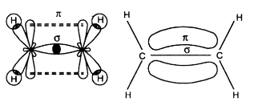
Nomenclature:
For nomenclature of alkenes in IUPAC system,
the longest chain of carbon atoms containing
the double bond is selected. Numbering of the
chain is done from the end which is nearer to
the double bond. The suffix ‘ene’ replaces ‘ane’
of alkanes. It may be remembered that first
member of alkene series is: CH2 (replacing n
by 1 in CnH2n) known as methene but has a
very short life. As already mentioned, first
stable member of alkene series is C2H4
known as ethylene (common) or ethene (IUPAC).
IUPAC names of a few members of alkenes are
given below :

Isomerism:
Alkenes show both structural isomerism and
geometrical isomerism.Structural isomerism :
As in alkanes, ethene (C2H4) and propene (C3H6)
can have only one structure but alkenes higher than propene
have different structures. Alkenes possessing
C4H8 as molecular formula can be written in
the following three ways:
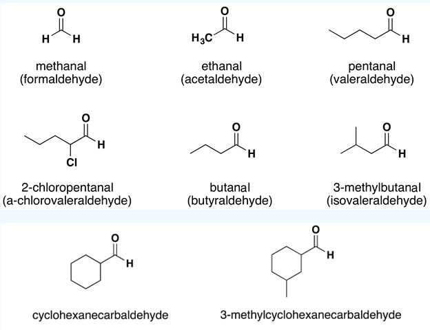
 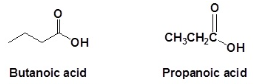
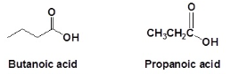
Structures I and III, and II and III are the
examples of chain isomerism whereas
structures I and II are position isomers.
Geometrical isomerism: Doubly bonded
carbon atoms have to satisfy the remaining two
valences by joining with two atoms or groups.
If the two atoms or groups attached to each
carbon atom are different, they can be
represented by YX C = C XY like structure.
YX C = C XY can be represented in space in the
following two ways :

In (a), the two identical atoms i.e., both the
X or both the Y lie on the same side of the
double bond but in (b) the two X or two Y lie
across the double bond or on the opposite
sides of the double bond. This results in
different geometry of (a) and (b) i.e. disposition
of atoms or groups in space in the two
arrangements is different. Therefore, they are
stereoisomers. They would have the same
geometry if atoms or groups around C=C bond
can be rotated but rotation around C=C bond
is not free. It is restricted. For understanding
this concept, take two pieces of strong
cardboards and join them with the help of two
nails. Hold one cardboard in your one hand
and try to rotate the other. Can you really rotate
the other cardboard ? The answer is no. The
rotation is restricted. This illustrates that the
restricted rotation of atoms or groups around
the doubly bonded carbon atoms gives rise to
different geometries of such compounds. The
stereoisomers of this type are called
geometrical isomers. The isomer of the type
(a), in which two identical atoms or groups lie
on the same side of the double bond is called
cis isomer and the other isomer of the type
(b), in which identical atoms or groups lie on
the opposite sides of the double bond is called
trans isomer . Thus cis and trans isomers
have the same structure but have different
configuration (arrangement of atoms or groups
in space). Due to different arrangement of
atoms or groups in space, these isomers differ
in their properties like melting point, boiling
point, dipole moment, solubility etc.
Geometrical or cis-trans isomers of but-2-ene
are represented below :

Cis form of alkene is found to be more polar
than the trans form. For example, dipole
moment of cis-but-2-ene is 0.33 Debye,
whereas, dipole moment of the trans form
is almost zero or it can be said that
trans-but-2-ene is non-polar. This can be
understood by drawing geometries of the two
forms as given below from which it is clear that
in the trans-but-2-ene, the two methyl groups
are in opposite directions, Threfore, dipole
moments of C-CH3 bonds cancel, thus making
the trans form non-polar.

In the case of solids, it is observed that
the trans isomer has higher melting point
than the cis form.
Geometrical or cis-trans isomerism
is also shown by alkenes of the types
XYC = CXZ and XYC = CZW
Preparation
1. From alkynes: Alkynes on partial
reduction with calculated amount of
dihydrogen in the presence of palladised
charcoal partially deactivated with poisons
like sulphur compounds or quinoline give
alkenes. Partially deactivated palladised
charcoal is known as Lindlar’s catalyst.
Alkenes thus obtained are having cis
geometry. However, alkynes on reduction
with sodium in liquid ammonia form trans
alkenes.


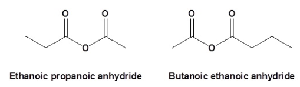
2. From alkyl halides: Alkyl halides (R-X)
on heating with alcoholic potash
(potassium hydroxide dissolved in alcohol,
say, ethanol) eliminate one molecule of
halogen acid to form alkenes. This reaction
is known as dehydrohalogenation i.e.,
removal of halogen acid. This is example of
β-elimination reaction, since hydrogen
atom is eliminated from the β carbon atom
(carbon atom next to the carbon to which
halogen is attached).
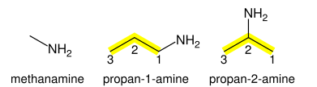
Nature of halogen atom and the alkyl
group determine rate of the reaction. It is
observed that for halogens, the rate is:
iodine > bromine > chlorine, while for alkyl
groups it is : tert > secondary > primary.
3. From vicinal dihalides: Dihalides in
which two halogen atoms are attached to
two adjacent carbon atoms are known as
vicinal dihalides. Vicinal dihalides on
treatment with zinc metal lose a molecule
of ZnX2 to form an alkene. This reaction is
known as dehalogenation.
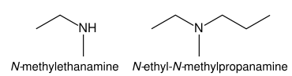

4. From alcohols by acidic dehydration:
You have read during nomenclature of
different homologous series that
alcohols are the hydroxy derivatives of
alkanes. They are represented by R–OH
where, R is CnH2n+1. Alcohols on heating
with concentrated sulphuric acid form
alkenes with the elimination of one water
molecule. Since a water molecule is
eliminated from the alcohol molecule in the
presence of an acid, this reaction is known
as acidic dehydration of alcohols. This
reaction is also the example of
β-elimination reaction since –OH group
takes out one hydrogen atom from the
β-carbon atom.

Properties
Physical properties:
Alkenes as a class resemble alkanes in physical
properties, except in types of isomerism and
difference in polar nature. The first three
members are gases, the next fourteen are
liquids and the higher ones are solids. Ethene
is a colourless gas with a faint sweet smell. All
other alkenes are colourless and odourless,
insoluble in water but fairly soluble in nonpolar solvents like benzene, petroleum ether.
They show a regular increase in boiling point
with increase in size i.e., every – CH2
group
added increases boiling point by 20–30 K. Like
alkanes, straight chain alkenes have higher
boiling point than isomeric branched chain
compounds.
Chemical properties
Alkenes are the rich source of loosely held
pi(π) electrons, due to which they show
addition reactions in which the electrophiles
add on to the carbon-carbon double bond to
form the addition products. Some reagents
also add by free radical mechanism. There are
cases when under special conditions, alkenes
also undergo free radical substitution
reactions. Oxidation and ozonolysis reactions
are also quite prominent in alkenes. A brief
description of different reactions of alkenes is
given below:
1. Addition of dihydrogen: Alkenes add up
one molecule of dihydrogen gas in the
presence of finely divided nickel, palladium
or platinum to form alkanes.
2. Addition of halogens : Halogens like
bromine or chlorine add up to alkene to
form vicinal dihalides. However, iodine
does not show addition reaction under
normal conditions. The reddish orange
colour of bromine solution in carbon
tetrachloride is discharged when bromine
adds up to an unsaturation site. This
reaction is used as a test for unsaturation.
Addition of halogens to alkenes is an
example of electrophilic addition reaction
involving cyclic halonium ion formation
which you will study in higher classes.

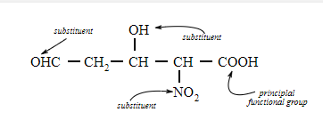
3. Addition of hydrogen halides:
Hydrogen halides (HCl, HBr,HI) add up to
alkenes to form alkyl halides. The order of
reactivity of the hydrogen halides is
HI > HBr > HCl. Like addition of halogens
to alkenes, addition of hydrogen halides is
also an example of electrophilic addition
reaction. Let us illustrate this by taking
addition of HBr to symmetrical and
unsymmetrical alkenes.
Addition reaction of HBr to symmetrical
alkenes
Addition reactions of HBr to symmetrical
alkenes (similar groups attached to double
bond) take place by electrophilic addition
mechanism.


Addition reaction of HBr to unsymmetrical alkenes (Markovnikov
Rule)
How will H – Br add to propene ? The two
possible products are I and II.
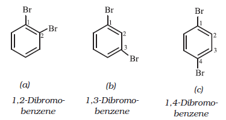
Markovnikov, a Russian chemist made a
generalisation in 1869 after studying such
reactions in detail. These generalisations led
Markovnikov to frame a rule called
Markovnikov rule. The rule states that
negative part of the addendum (adding
molecule) gets attached to that carbon atom
which possesses lesser number of hydrogen
atoms. Thus according to this rule, product I
i.e., 2-bromopropane is expected. In actual
practice, this is the principal product of the
reaction. This generalisation of Markovnikov
rule can be better understood in terms of
mechanism of the reaction.
Mechanism
Hydrogen bromide provides an electrophile, H+
,
which attacks the double bond to form
carbocation as shown below :

(i) The secondary carbocation (b) is more
stable than the primary carbocation (a),
therefore, the former predominates because
it is formed at a faster rate.
(ii) The carbocation (b) is attacked by Br–
ion
to form the product as follows :

Anti Markovnikov addition or peroxide
effect or Kharash effect
In the presence of peroxide, addition of HBr
to unsymmetrical alkenes like propene takes
place contrary to the Markovnikov rule. This
happens only with HBr but not with HCl and
Hl. This addition reaction was observed
by M.S. Kharash and F.R. Mayo in 1933 at
the University of Chicago. This reaction
is known as peroxide or Kharash effect
or addition reaction anti to Markovnikov
rule.
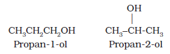
Mechanism :
Peroxide effect proceeds via free
radical chain mechanism as given below:


The secondary free radical obtained in the
above mechanism (step iii) is more stable than
the primary. This explains the formation of
1-bromopropane as the major product. It may
be noted that the peroxide effect is not observed
in addition of HCl and HI. This may be due
to the fact that the H–Cl bond being
stronger (430.5 kJ mol–1) than H–Br bond
(363.7 kJ mol–1), is not cleaved by the free
radical, whereas the H–I bond is weaker
(296.8 kJ mol–1) and iodine free radicals
combine to form iodine molecules instead of
adding to the double bond.
4. Addition of sulphuric acid : Cold
concentrated sulphuric acid adds to
alkenes in accordance with Markovnikov
rule to form alkyl hydrogen sulphate by
the electrophilic addition reaction.


5. Addition of water : In the presence of a
few drops of concentrated sulphuric acid
alkenes react with water to form alcohols,
in accordance with the Markovnikov rule.
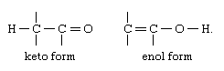
6. Oxidation:
a) Alkenes on reaction with cold,
dilute, aqueous solution of potassium
permanganate (Baeyer’s reagent) produce
vicinal glycols. Decolorisation of KMnO4
solution is used as a test for unsaturation.


b) Acidic potassium permanganate or acidic
potassium dichromate oxidises alkenes to
ketones and/or acids depending upon the
nature of the alkene and the experimental
conditions
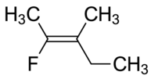
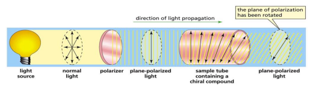
7. Ozonolysis : Ozonolysis of alkenes involves
the addition of ozone molecule to alkene to
form ozonide, and then cleavage of the
ozonide by Zn-H2O to smaller molecules.
This reaction is highly useful in detecting
the position of the double bond in alkenes
or other unsaturated compounds.

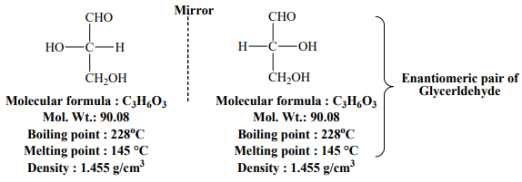
8. Polymerisation: You are familiar with
polythene bags and polythene sheets.
Polythene is obtained by the combination
of large number of ethene molecules at high
temperature, high pressure and in the
presence of a catalyst. The large molecules
thus obtained are called polymers. This
reaction is known as polymerisation. The
simple compounds from which polymers
are made are called monomers. Other
alkenes also undergo polymerisation.

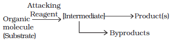
Polymers are used for the manufacture of
plastic bags, squeeze bottles, refrigerator dishes,
toys, pipes, radio and T.V. cabinets etc.
Polypropene is used for the manufacture of milk
crates, plastic buckets and other moulded
articles. Though these materials have now
become common, excessive use of polythene
and polypropylene is a matter of great concern
for all of us.
ALKYNES
Like alkenes, alkynes are also unsaturated
hydrocarbons. They contain at least one triple
bond between two carbon atoms. The number
of hydrogen atoms is still less in alkynes as
compared to alkenes or alkanes. Their general
formula is CnH2n-2.
The first stable member of alkyne series
is ethyne which is popularly known as
acetylene. Acetylene is used for arc welding
purposes in the form of oxyacetylene flame
obtained by mixing acetylene with oxygen gas.
Alkynes are starting materials for a large
number of organic compounds. Hence, it is
interesting to study this class of organic
compounds
Nomenclature and Isomerism:
In common system, alkynes are named as
derivatives of acetylene. In IUPAC system, they
are named as derivatives of the corresponding
alkanes replacing ‘ane’ by the suffix ‘yne’. The
position of the triple bond is indicated by the
first triply bonded carbon. Common and
IUPAC names of a few members of alkyne series
are given in Table below.
You have already learnt that ethyne and
propyne have got only one structure but there
are two possible structures for butyne –
(i) but-1-yne and (ii) but-2-yne. Since these two
compounds differ in their structures due to the
position of the triple bond, they are known as
position isomers. Let us try to arrange five carbon atoms
with a continuous chain and with a side chain.
Following are the possible structures :
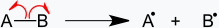
Structures I and II are position isomers and
structures I and III or II and III are chain isomers.
Structure of Triple Bond:
Ethyne is the simplest molecule of alkyne
series.Each carbon atom of ethyne has two sp
hybridised orbitals. Carbon-carbon sigma (σ)
bond is obtained by the head-on overlapping
of the two sp hybridised orbitals of the two
carbon atoms. The remaining sp hybridised
orbital of each carbon atom undergoes
overlapping along the internuclear axis with
the 1s orbital of each of the two hydrogen atoms
forming two C-H sigma bonds. H-C-C bond
angle is of 180°. Each carbon has two
unhybridised p orbitals which are
perpendicular to each other as well as to the
plane of the C-C sigma bond. The 2p orbitals
of one carbon atom are parallel to the 2p
orbitals of the other carbon atom, which
undergo lateral or sideways overlapping to
form two pi (π) bonds between two carbon
atoms.

Thus ethyne molecule consists of one
C–C σ bond, two C–H σ bonds and two C–C π
bonds. The strength of C≡C bond (bond
enthalpy 823 kJ mol-1) is more than those of
C=C bond (bond enthalpy 681 kJ mol–1) and
C–C bond (bond enthalpy 348 kJ mol–1). The
C≡C bond length is shorter (120 pm) than those
of C=C (133 pm) and C–C (154 pm). Electron
cloud between two carbon atoms is
cylindrically symmetrical about the
internuclear axis. Thus, ethyne is a linear
molecule.
Preparation
1. From calcium carbide: On industrial
scale, ethyne is prepared by treating calcium
carbide with water. Calcium carbide is
prepared by heating quick lime with coke.
Quick lime can be obtained by heating
limestone as shown in the following
reactions:


2. From vicinal dihalides : Vicinal
dihalides on treatment with alcoholic
potassium hydroxide undergo
dehydrohalogenation. One molecule of
hydrogen halide is eliminated to form
alkenyl halide which on treatment with
sodamide gives alkyne.

Properties
Physical properties
Physical properties of alkynes follow the same
trend of alkenes and alkanes. First three
members are gases, the next eight are liquids
and the higher ones are solids. All alkynes are
colourless. Ethyene has characteristic odour.
Other members are odourless. Alkynes are
weakly polar in nature. They are lighter than
water and immiscible with water but soluble
in organic solvents like ethers, carbon
tetrachloride and benzene. Their melting point,
boiling point and density increase with
increase in molar mass.
Chemical properties
Alkynes show acidic nature, addition reactions
and polymerisation reactions as follows :
A. Acidic character of alkyne: Sodium
metal and sodamide (NaNH2) are strong bases.
They react with ethyne to form sodium
acetylide with the liberation of dihydrogen gas.
These reactions have not been observed in case
of ethene and ethane thus indicating that
ethyne is acidic in nature in comparison to
ethene and ethane. Why is it so ? Has it
something to do with their structures and the
hybridisation ? You have read that hydrogen
atoms in ethyne are attached to the sp
hybridised carbon atoms whereas they are
attached to sp2
hybridised carbon atoms in
ethene and sp3
hybridised carbons in ethane.
Due to the maximum percentage of s character
(50%), the sp hybridised orbitals of carbon
atoms in ethyne molecules have highest
electronegativity; hence, these attract the
shared electron pair of the C-H bond of ethyne
to a greater extent than that of the sp2
hybridised orbitals of carbon in ethene and the
sp3
hybridised orbital of carbon in ethane.
Thus in ethyne, hydrogen atoms can be
liberated as protons more easily as compared
to ethene and ethane. Hence, hydrogen atoms
of ethyne attached to triply bonded carbon
atom are acidic in nature. You may note that
the hydrogen atoms attached to the triply
bonded carbons are acidic but not all the
hydrogen atoms of alkynes.


These reactions are not shown by alkenes
and alkanes, hence used for distinction
between alkynes, alkenes and alkanes. What
about the above reactions with but-1-yne and
but-2-yne ? Alkanes, alkenes and alkynes
follow the following trend in their acidic
behaviour :

B. Addition reactions: Alkynes contain a
triple bond, so they add up, two molecules of
dihydrogen, halogen, hydrogen halides etc.
Formation of the addition product takes place
according to the following steps.
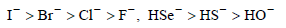
The addition product formed depends upon
stability of vinylic cation. Addition in
unsymmetrical alkynes takes place according
to Markovnikov rule. Majority of the reactions
of alkynes are the examples of electrophilic
addition reactions. A few addition reactions are
given below:
(i) Addition of dihydrogen


(ii) Addition of halogens

Reddish orange colour of the solution of
bromine in carbon tetrachloride is decolourised.
This is used as a test for unsaturation
(iii) Addition of hydrogen halides:
Two molecules of hydrogen halides (HCl, HBr,
HI) add to alkynes to form gem dihalides (in
which two halogens are attached to the same
carbon atom)

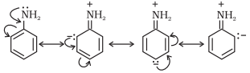
(iv) Addition of water
Like alkanes and alkenes, alkynes are also
immiscible and do not react with water.
However, one molecule of water adds to alkynes
on warming with mercuric sulphate and dilute
sulphuric acid at 333 K to form carbonyl
compounds.
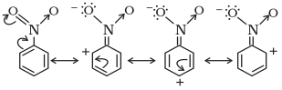

v) Polymerisation
(a) Linear polymerisation: Under suitable
conditions, linear polymerisation of ethyne
takes place to produce polyacetylene or
polyethyne which is a high molecular weight
polyene containing repeating units of
(CH = CH – CH = CH ) and can be represented
as —( CH = CH – CH = CH)— Under special n
conditions, this polymer conducts electricity.
Thin film of polyacetylene can be used as
electrodes in batteries. These films are good
conductors, lighter and cheaper than the metal
conductors.
(b) Cyclic polymerisation: Ethyne on passing
through red hot iron tube at 873K undergoes
cyclic polymerization. Three molecules
polymerise to form benzene, which is the
starting molecule for the preparation of
derivatives of benzene, dyes, drugs and large
number of other organic compounds. This is
the best route for entering from aliphatic to
aromatic compounds as discussed below:
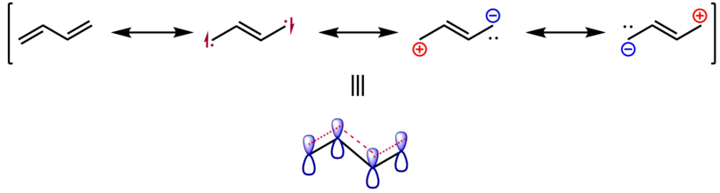
AROMATIC HYDROCARBON
These hydrocarbons are also known as
‘arenes’. Since most of them possess pleasant
odour (Greek; aroma meaning pleasant
smelling), the class of compounds was named
as ‘aromatic compounds’. Most of such
compounds were found to contain benzene
ring. Benzene ring is highly unsaturated but
in a majority of reactions of aromatic
compounds, the unsaturation of benzene ring
is retained. However, there are examples of
aromatic hydrocarbons which do not contain
a benzene ring but instead contain other highly
unsaturated ring. Aromatic compounds
containing benzene ring are known as
benzenoids and those not containing a
benzene ring are known as non-benzenoids.
Some examples of arenes are given
below:
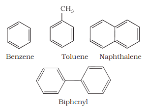
Nomenclature and Isomerism:
The nomenclature and isomerism of aromatic
hydrocarbons has already been discussed in
Unit 12. All six hydrogen atoms in benzene are
equivalent; so it forms one and only one type
of monosubstituted product. When two
hydrogen atoms in benzene are replaced by
two similar or different monovalent atoms or
groups, three different position isomers are
possible. The 1, 2 or 1, 6 is known as the ortho
(o–), the 1, 3 or 1, 5 as meta (m–) and the 1, 4
as para (p–) disubstituted compounds. A few
examples of derivatives of benzene are given
below:
 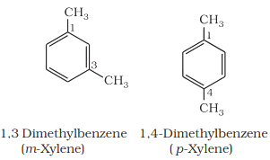
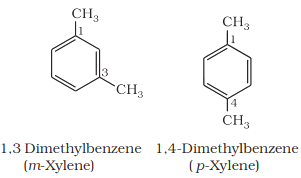
Structure of Benzene
Benzene was isolated by Michael Faraday in
1825. The molecular formula of benzene,
C6H6, indicates a high degree of unsaturation.
This molecular formula did not account for its
relationship to corresponding alkanes, alkenes
and alkynes which you have studied in earlier
sections of this unit. What do you think about
its possible structure? Due to its unique
properties and unusual stability, it took several
years to assign its structure. Benzene was
found to be a stable molecule and found to
form a triozonide which indicates the presence
of three double bonds. Benzene was further
found to produce one and only one
monosubstituted derivative which indicated
that all the six carbon and six hydrogen atoms
of benzene are identical. On the basis of this
observation August Kekulé in 1865 proposed
the following structure for benzene having
cyclic arrangement of six carbon atoms with
alternate single and double bonds and one
hydrogen atom attached to each carbon
atom.

The Kekulé structure indicates
the possibility of two isomeric
1, 2-dibromobenzenes. In one of the isomers,
the bromine atoms are attached to the doubly
bonded carbon atoms whereas in the other,
they are attached to the singly bonded carbons.
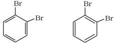
However, benzene was found to form only
one ortho disubstituted product. This problem
was overcome by Kekulé by suggesting the
concept of oscillating nature of double bonds
in benzene as given below

Even with this modification, Kekulé
structure of benzene fails to explain unusual
stability and preference to substitution
reactions than addition reactions, which could
later on be explained by resonance.
Resonance and stability of benzene:
According to Valence Bond Theory, the concept
of oscillating double bonds in benzene is now
explained by resonance. Benzene is a hybrid
of various resonating structures. The two
structures, A and B given by Kekulé are the
main contributing structures. The hybrid
structure is represented by inserting a circle
or a dotted circle in the hexagon as shown in
(C). The circle represents the six electrons which
are delocalised between the six carbon atoms
of the benzene ring.
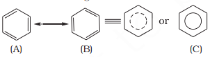
The orbital overlapping gives us better
picture about the structure of benzene. All the
six carbon atoms in benzene are sp2
hybridized.Two sp2
hybrid orbitals of each carbon atom
overlap with sp2
hybrid orbitals of adjacent
carbon atoms to form six C—C sigma bonds
which are in the hexagonal plane. The
remaining sp2
hybrid orbital of each carbon
atom overlaps with s orbital of a hydrogen atom
to form six C—H sigma bonds. Each carbon
atom is now left with one unhybridised p orbital
perpendicular to the plane of the ring as shown
below.
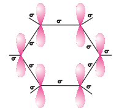
The unhybridised p orbital of carbon atoms
are close enough to form a π bond by lateral
overlap. There are two equal possibilities of
forming three π bonds by overlap of p orbitals
of C1 –C2
, C3 – C4
, C5 – C6
or C2 – C3
, C4 – C5
,C6 – C1 respectively as shown in the following
figures.

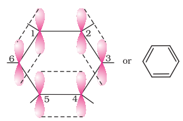
Structures shown in above figures
correspond to two Kekulé’s structure with
localised π bonds. The internuclear distance
between all the carbon atoms in the ring has
been determined by the X-ray diffraction to be
the same; there is equal probability for the p
orbital of each carbon atom to overlap with the
p orbitals of adjacent carbon atoms [Fig. 13.7
(c)]. This can be represented in the form of two
doughtnuts (rings) of electron clouds [Fig. 13.7
(d)], one above and one below the plane of the
hexagonal ring as shown below:
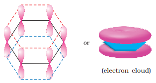
The six π electrons are thus delocalised and
can move freely about the six carbon nuclei,
instead of any two as shown in the above figures.
The delocalised π electron cloud is attracted
more strongly by the nuclei of the carbon
atoms than the electron cloud localised
between two carbon atoms. Therefore, presence
of delocalised π electrons in benzene makes
it more stable than the hypothetical
cyclohexatriene.
X-Ray diffraction data reveals that benzene
is a planar molecule. Had any one of the above
structures of benzene (A or B) been correct, two
types of C—C bond lengths were expected.
However, X-ray data indicates that all the six
C—C bond lengths are of the same order
(139 pm) which is intermediate between
C— C single bond (154 pm) and C—C double
bond (133 pm). Thus the absence of pure
double bond in benzene accounts for the
reluctance of benzene to show addition
reactions under normal conditions, thus
explaining the unusual behaviour of benzene.
Aromaticity
Benzene was considered as parent ‘aromatic’
compound. Now, the name is applied to all the
ring systems whether or not having benzene
ring, possessing following characteristics.
(i) Planarity
(ii) Complete delocalisation of the π electrons
in the ring
(iii) Presence of (4n + 2) π electrons in the ring
where n is an integer (n = 0, 1, 2, . . .).
This is often referred to as Hückel Rule.
Some examples of aromatic compounds are
given below:

Preparation of Benzene
Benzene is commercially isolated from coal tar.
However, it may be prepared in the laboratory
by the following methods.
(i) Cyclic polymerisation of ethyne:

(ii) Decarboxylation of aromatic acids:
Sodium salt of benzoic acid on heating with
sodalime gives benzene.
(iii) Reduction of phenol: Phenol is reduced
to benzene by passing its vapours over
heated zinc dust.

Properties
Physical properties:
Aromatic hydrocarbons are non- polar
molecules and are usually colourless liquids
or solids with a characteristic aroma. You are
also familiar with naphthalene balls which are
used in toilets and for preservation of clothes
because of unique smell of the compound and
the moth repellent property. Aromatic
hydrocarbons are immiscible with water but
are readily miscible with organic solvents. They
burn with sooty flame.
Chemical properties
Arenes are characterised by electrophilic
substitution reactions. However, under special
conditions they can also undergo addition and
oxidation reactions.
Electrophilic substitution reactions:
The common electrophilic substitution
reactions of arenes are nitration, halogenation,
sulphonation, Friedel Craft’s alkylation and
acylation reactions in which attacking reagent
is an electrophile (E+)
(i) Nitration: A nitro group is introduced into
benzene ring when benzene is heated with a
mixture of concentrated nitric acid and
concentrated sulphuric acid (nitrating
mixture).
(ii) Halogenation: Arenes react with halogens
in the presence of a Lewis acid like anhydrous
FeCl3, FeBr3 or AlCl3 to yield haloarenes.

(iii) Sulphonation: The replacement of a
hydrogen atom by a sulphonic acid group in
a ring is called sulphonation. It is carried out
by heating benzene with fuming sulphuric acid
(oleum).
(iv) Friedel-Crafts alkylation reaction:
When benzene is treated with an alkyl halide
in the presence of anhydrous aluminium
chloride, alkylbenene is formed.

(v) Friedel-Crafts acylation reaction: The
reaction of benzene with an acyl halide or acid
anhydride in the presence of Lewis acids (AlCl3>)yields acyl benzene.

If excess of electrophilic reagent is used,
further substitution reaction may take place
in which other hydrogen atoms of benzene ring
may also be successively replaced by the
electrophile. For example, benzene on
treatment with excess of chlorine in the
presence of anhydrous AlCl3> can be
chlorinated to hexachlorobenzene (C6>Cl6>)
Mechanism of electrophilic substitution
reactions:According to experimental evidences, SE
(S =substitution; E = electrophilic) reactions are
supposed to proceed via the following three
steps:
(a) Generation of the eletrophile
(b) Formation of carbocation intermediate
(c) Removal of proton from the carbocation
intermediate
(a) Generation of electrophile E+: During
chlorination, alkylation and acylation of
benzene, anhydrous AlCl3>
, being a Lewis acid helps in generation of the
elctrophile Cl+ , R+ ,RC+O (acylium ion)
respectively by combining with the attacking reagent.
In the case of nitration, the electrophile,
nitronium ion, NO2>+ is produced by transfer
of a proton (from sulphuric acid) to nitric acid
in the following manner:

It is interesting to note that in the process
of generation of nitronium ion, sulphuric acid
serves as an acid and nitric acid as a base.
Thus, it is a simple acid-base equilibrium.
(b) Formation of Carbocation (arenium ion):
Attack of electrophile results in the formation of σ-complex or
arenium ion in which one of the carbon is sp3
hybridised.

The arenium ion gets stabilised by resonance:
Sigma complex or arenium ion loses its
aromatic character because delocalisation of
electrons stops at sp3 hybridised carbon.
(c) Removal of proton: To restore the
aromatic character, σ -complex releases proton
from sp3 hybridised carbon on attack by
[AlCl4]- (in case of halogenation, alkylation and
acylation) and [HSO4]- (in case of nitration).

Addition reactions
Under vigorous conditions, i.e., at high
temperature and/ or pressure in the presence
of nickel catalyst, hydrogenation of benzene
gives cyclohexane.

Under ultra-violet light, three chlorine
molecules add to benzene to produce benzene
hexachloride, C6H6Cl6 which is also called
gammaxane

Combustion: When heated in air, benzene
burns with sooty flame producing CO2
and H2O

General combustion reaction for any
hydrocarbon may be given by the following chemical equation:

Directive influence of a functional
group in monosubstituted benzene
When monosubstituted benzene is subjected
to further substitution, three possible
disubstituted products are not formed in equal
amounts. Two types of behaviour are observed.
Either ortho and para products or meta
product is predominantly formed. It has also
been observed that this behaviour depends on
the nature of the substituent already present
in the benzene ring and not on the nature of
the entering group. This is known as directive
influence of substituents. Reasons for ortho/
para or meta directive nature of groups are
discussed below:
Ortho and para directing groups: The
groups which direct the incoming group to
ortho and para positions are called ortho and
para directing groups. As an example, let us
discuss the directive influence of phenolic
(–OH) group. Phenol is resonance hybrid of
following structures:
It is clear from the above resonating structures
that the electron density is more on
o – and p – positions. Hence, the substitution
takes place mainly at these positions. However,
it may be noted that –I effect of – OH group
also operates due to which the electron density
on ortho and para positions of the benzene ring
is slightly reduced. But the overall electron
density increases at these positions of the ring
due to resonance. Therefore, –OH group
activates the benzene ring for the attack by
an electrophile. Other examples of activating
groups are –NH2 , –NHR, –NHCOCH3 , –OCH3 ,–CH3 ,
–C2H5, etc.
In the case of aryl halides, halogens are
moderately deactivating. Because of their
strong – I effect, overall electron density on
benzene ring decreases. It makes further
substitution difficult. However, due to
resonance the electron density on o– and p–
positions is greater than that at the m-position.
Hence, they are also o– and p– directing groups.
Resonance structures of chlorobenzene are
given below:
Meta directing group: The groups which
direct the incoming group to meta position are
called meta directing groups. Some examples
of meta directing groups are –NO2
, –CN, –CHO,–COR, –COOH, –COOR, –SO3H, etc.
Let us take the example of nitro group. Nitro
group reduces the electron density in the
benzene ring due to its strong–I effect.
Nitrobenzene is a resonance hybrid of the
following structures.
In this case, the overall electron density on
benzene ring decreases making further
substitution difficult, therefore these groups
are also called ‘deactivating groups’. The
electron density on o– and p– position is
comparatively less than that at meta position.
Hence, the electrophile attacks on
comparatively electron rich meta position
resulting in meta substitution.
CARCINOGENICITY AND TOXICITY
Benzene and polynuclear hydrocarbons
containing more than two benzene rings
fused together are toxic and said to possess
cancer producing (carcinogenic) property.
Such polynuclear hydrocarbons are formed
on incomplete combustion of organic
materials like tobacco, coal and petroleum.
They enter into human body and undergo
various biochemical reactions and finally
damage DNA and cause cancer. Some of
the carcinogenic hydrocarbons are given
below: